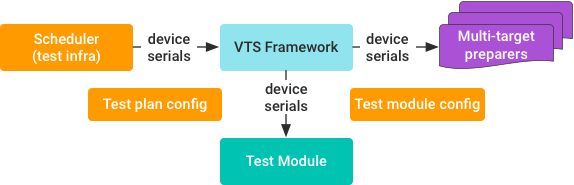
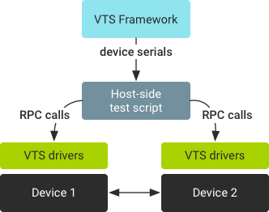
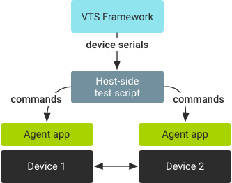
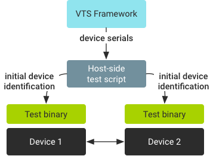

VTS supports tests that require interaction between multiple Android devices.
VTS uses the TradeFed framework to get and pass device serials to test modules.

Device requirements, such as number of devices and device types, are specified in test plan configuration. For example, you can specify a test plan that requires two Android devices with Sailfish build targets.
The test infrastructure (usually the test scheduler) allocates available devices that satisfy the requirements specified in test plan configuration to the VTS framework. Allocated devices are reserved for the test plan even if the test module is not using them. VTS agent binaries are then pushed to and run on all allocated devices (unless specifically instructed not to run). This ensures that TCP connections for shell commands and HAL RPCs are available for all devices in a test script.
The framework runs test preparers for all devices for which it received serial numbers. Target preparers can be single or multi-device:
Test modules get a list of devices after the test preparers finish setting up the host/devices. One host-side Python test module runs for each multi-device test module. Allocated Android devices are accessible from Python test modules as a list of AndroidDevice objects:
devices = self.android_devices device1 = devices[0] device1_serial = device1.serial
All allocated devices are reserved for the test plan, even though a test module in the plan is only using one device.
Effective multi-Android tests involve communication between allocated devices. When developing such tests, you must determine how to establish communication between the allocated devices. The following sections provide three communication examples (however, test developers are free to design other models).
Host-side HAL tests can use VTS HAL drivers that are pushed to devices by default:

In this scenario:
Instead of using VTS agents on device, a host-side test can also push its own agent (app or binary) to each device:

In this scenario:
For example, the Next Billion User tests in current VTS repo are host-side, app-based, multi-device tests.
Target-side, multi-device HIDL tests put all test logic on device-side test binaries, which requires the tests to synchronize devices during test execution:

In this scenario:
This example specifies the config for two devices:
VtsDeviceInfoCollector target preparer.FilePusher preparer that pushes
a group of host-driven related files to the device.<configuration description="VTS Codelab Plan"> ... <device name="device1"> <build_provider class="com.android.compatibility.common.tradefed.build.CompatibilityBuildProvider" /> <target_preparer class="com.android.tradefed.targetprep.VtsDeviceInfoCollector" /> </device> <device name="device2" > <build_provider class="com.android.compatibility.common.tradefed.build.CompatibilityBuildProvider" /> <target_preparer class="com.android.tradefed.targetprep.VtsDeviceInfoCollector" /> <target_preparer class="com.android.compatibility.common.tradefed.targetprep.VtsFilePusher"> <option name="push-group" value="HostDrivenTest.push" /> </target_preparer> </device> <option name="compatibility:include-filter" value="VtsCodelabHelloWorldMultiDeviceTest" /> </configuration>
For details and examples on test preparers, see Test Preparers. For a complete host-side multi-device example, refer to the hello_world_multi codelab.
def setUpClass(self):
logging.info('number of device: %s', self.android_devices)
asserts.assertEqual(len(self.android_devices), 2, 'number of device is wrong.')
self.dut1 = self.android_devices[0]
self.dut2 = self.android_devices[1]
self.shell1 = self.dut1.shell
self.shell2 = self.dut2.shell
def testSerialNotEqual(self):
'''Checks serial number from two device not being equal.'''
command = 'getprop | grep ro.serial'
res1 = self.shell1.Execute(command)
res2 = self.shell2.Execute(command)
def getSerialFromShellOutput(output):
'''Get serial from getprop query'''
return output[const.STDOUT][0].strip().split(' ')[-1][1:-1]
serial1 = getSerialFromShellOutput(res1)
serial2 = getSerialFromShellOutput(res2)
logging.info('Serial number of device 1 shell output: %s', serial1)
logging.info('Serial number of device 2 shell output: %s', serial2)
asserts.assertNotEqual(serial1, serial2, 'serials from two devices should not be the same')
asserts.assertEqual(serial1, self.dut1.serial, 'serial got from device system property is different from allocated serial')
asserts.assertEqual(serial2, self.dut2.serial, 'serial got from device system property is different from allocated serial')